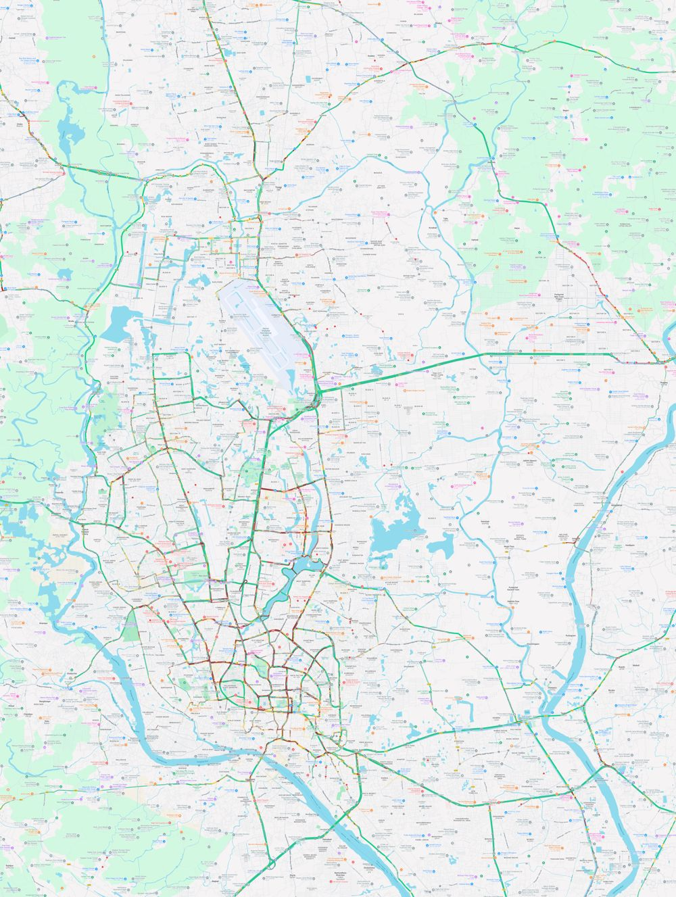
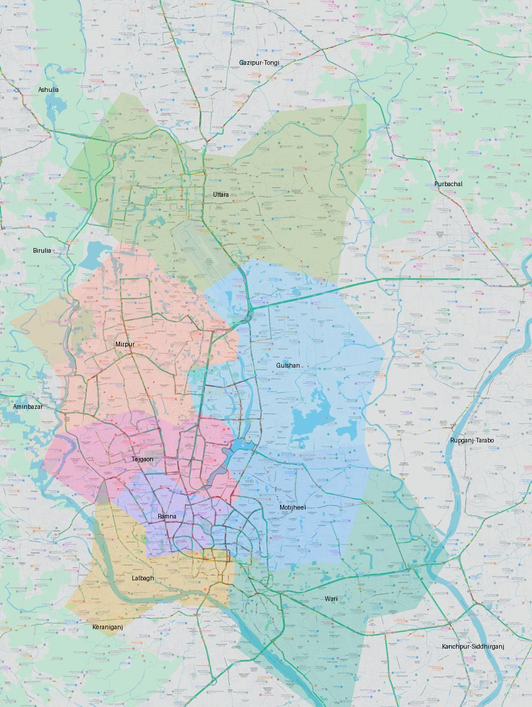

ঢাকা মেট্রোপলিটন এলাকার যানজট লগ
Google Maps ট্রাফিক রঙ থেকে প্রতি 15 মিনিটে জুম 18-এ মাপা যানজট। ২৪ × ৩২ কিমি আয়তক্ষেত্র: DMP-এর ৮টি ট্রাফিক বিভাগ এবং টঙ্গী থেকে কেরানীগঞ্জ, আশুলিয়া থেকে রূপগঞ্জ পর্যন্ত আশপাশের ৮টি এলাকা।
প্রতিদিন, প্রতি ঘণ্টা
প্রতিটি ঘর এক ঘণ্টার গড় যানজট (পুরো গবেষণা এলাকা)। সবুজ মানে রাস্তা ফাঁকা, গাঢ় লাল মানে প্রায় থেমে থাকা।
০ ১০০
দৈনিক যানজট সূচক ও বৃষ্টি
রেখা: দিনের গড় যানজট স্কোর। কলাম: সেদিনের মোট বৃষ্টি (মিমি)।
বিভাগ ও এলাকা অনুযায়ী গড় যানজট
পুরো সময়ের গড় স্কোর, বেশি থেকে কম। ধূসর লেখা মানে DMP-এর বাইরের এলাকা।
দিনভিত্তিক সম্ভাব্য কারণ
আবহাওয়া, ছুটির তালিকা ও সংবাদ শিরোনাম মিলিয়ে স্বয়ংক্রিয়ভাবে লেখা। এগুলো সম্ভাব্য কারণ, নিশ্চিত প্রমাণ নয়।
সর্বশেষ স্ন্যাপশট
দ্বিতীয় ছবির রঙিন অংশগুলো DMP ট্রাফিক বিভাগ, হালকা ধূসর অংশগুলো DMP-এর বাইরের এলাকা। ভুল জায়গায় থাকলে config.py-তে থানার অবস্থান ঠিক করুন।

